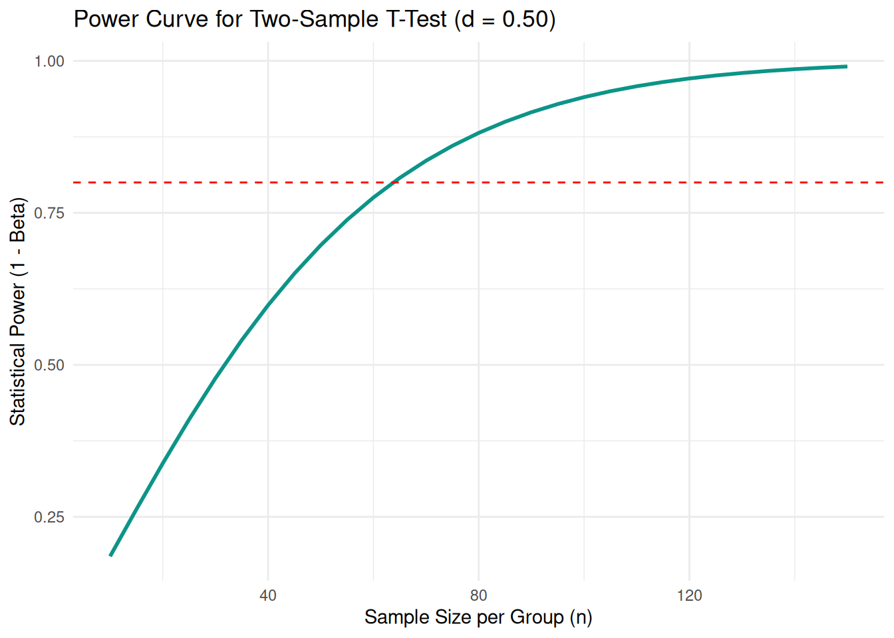

library(pwr)5.3 Statistical Power & Sample Size
Planning sample sizes and avoiding underpowered studies with the pwr package
Introduction to Statistical Power
When designing an empirical study, one of the most critical decisions is how many participants to recruit. If your sample is too small, your study may be underpowered: even if a real effect exists in the population, your test may have a low probability of detecting it.
Statistical power is defined as:
\[\text{Power} = 1 - \beta = P(\text{Reject } H_0 \mid H_1 \text{ is true})\]
In communication science, the conventional standard is to aim for a power of at least 0.80 (an 80% chance of detecting an effect if it truly exists).
The Four Interconnected Parameters
Statistical power involves a four-way relationship between:
- Significance level (\(\alpha\)): Usually set to 0.05.
- Statistical power (\(1 - \beta\)): Usually targeted at 0.80.
- Effect size: The expected magnitude of the phenomenon in the population (e.g., Cohen’s \(d\), Pearson’s \(r\), or Cohen’s \(f^2\)).
- Sample size (\(N\)): The number of observations needed.
Given any three of these parameters, the fourth can be calculated mathematically.
Power Analysis for Independent Samples T-Test
NoteRequired Packages
Suppose we are planning an experiment comparing two independent groups (e.g., exposure to an interactive health website vs. a static text website). We expect a moderate effect size of Cohen’s \(d = 0.50\), and want \(80\%\) power at \(\alpha = 0.05\).
We can compute the required sample size per group using pwr.t.test():
pwr.t.test(d = 0.50, sig.level = 0.05, power = 0.80, type = "two.sample", alternative = "two.sided")
Two-sample t test power calculation
n = 63.76561
d = 0.5
sig.level = 0.05
power = 0.8
alternative = two.sided
NOTE: n is number in *each* groupThe output indicates that we need approximately 64 participants per group, or a total sample of \(N = 128\).
Visualizing Power Curves
How does statistical power change as sample size increases? We can generate and plot a power curve:
library(tidyverse)── Attaching core tidyverse packages ──────────────────────── tidyverse 2.0.0 ──
✔ dplyr 1.2.1 ✔ readr 2.2.0
✔ forcats 1.0.1 ✔ stringr 1.6.0
✔ ggplot2 4.0.3 ✔ tibble 3.3.1
✔ lubridate 1.9.5 ✔ tidyr 1.3.2
✔ purrr 1.2.2
── Conflicts ────────────────────────────────────────── tidyverse_conflicts() ──
✖ dplyr::filter() masks stats::filter()
✖ dplyr::lag() masks stats::lag()
ℹ Use the conflicted package (<http://conflicted.r-lib.org/>) to force all conflicts to become errorssample_sizes <- seq(10, 150, by = 5)
powers <- sapply(sample_sizes, function(n) {
pwr.t.test(n = n, d = 0.50, sig.level = 0.05)$power
})
power_df <- tibble(n_per_group = sample_sizes, power = powers)
ggplot(power_df, aes(x = n_per_group, y = power)) +
geom_line(color = "#0d9488", linewidth = 1) +
geom_hline(yintercept = 0.80, linetype = "dashed", color = "red") +
labs(
title = "Power Curve for Two-Sample T-Test (d = 0.50)",
x = "Sample Size per Group (n)",
y = "Statistical Power (1 - Beta)"
) +
theme_minimal()
Power Analysis for Regression
For multiple regression models, effect sizes are expressed as Cohen’s \(f^2\):
\[f^2 = \frac{R^2}{1 - R^2}\]
For instance, an \(R^2\) of \(0.09\) corresponds to \(f^2 \approx 0.10\) (a small-to-moderate effect). Using pwr.f2.test():
# u = number of predictors (e.g. 3 predictors), v = degrees of freedom for error
pwr.f2.test(u = 3, f2 = 0.10, sig.level = 0.05, power = 0.80)
Multiple regression power calculation
u = 3
v = 109.0103
f2 = 0.1
sig.level = 0.05
power = 0.8The total sample size required is \(N = v + u + 1 \approx 109 + 3 + 1 = 113\) observations.
Best Practices for Theses and Research Projects
- Conduct A Priori Power Analyses: Always perform power planning before data collection begins.
- Base Effect Sizes on Theory or Meta-Analyses: Avoid post-hoc power calculations based on observed \(p\)-values.
- Plan for Attrition: In survey panels or longitudinal designs, recruit 10–20% more participants to account for dropouts and incomplete responses.